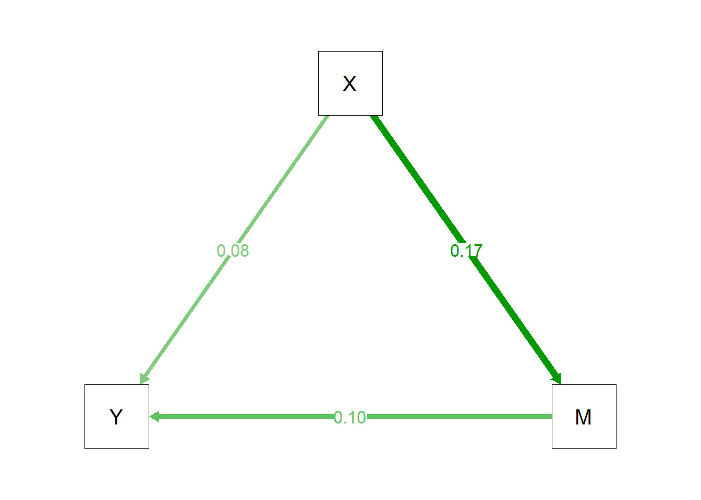

Reliability Study
Number of items: 6
Number of cases: 3484
Estimates:
coef sem
alpha 0.846 1.24
omega 0.850 1.23Report using US 2000 PISA Dataset
Reproducing methods in the following article:
Jung-Sook Lee (2014) The Relationship Between Student Engagement and Academic Performance: Is It a Myth or Reality?, The Journal of Educational Research, 107:3, 177-185, DOI: 10.1080/00220671.2013.807491
Data Source
US PISA 2000 Dataset
Descriptives
- created metadata/items_replicate.csv and numbered the metadata/Lee_2014_numbered_columns.pdf listing the details for all the main figures to reproduce
- note removed one student with reading score ~9999
- guess work on what schools are actually ‘responding’ and which are ‘replacement’ i.e. 142 schools in sample but paper reports this is 121
- best guess is schoolid_recoded where students from ‘replacement / partly responding schools’ are artificially merged to other ‘neighbourhing schools’ derived this by hand based on one paragraph in the us handbook - part responding school and core sample school match details in metadata/replacement_codes.csv
Replacement schools were assigned according to the following rules: The preceding school on the frame was assigned as the first replacement school for each sampled school and the second school was assigned as the second replacement school, unless the candidate replacement school is a sampled school or is in a different PSU, has a different minority status for public schools, or has a different school type for private schools. If a candidate replacement school neighbors two sampled schools, it is selected as a replacement for the sampled school that it precedes. Under these rules, some sampled schools can be assigned only one replacement, and some can be assigned no replacement schools.
used warm likelihood estimate of reading not plausible values and grand mean centered / did not center within clusters
did not derive own factors so dont know how these were centered
took average across responses to check reliability (in derived variables these are the warm likelihood estimates?) also this was not included in the US data so had to merge from the dta format made available by researcher in README
for race combined two variables one asking Hispanic or not and one asking race did not use race_dv because did not know coding for this
item analysis for emote engagement ?
item analysis for behave engagement ?
Reliability Study
Number of items: 4
Number of cases: 3188
Estimates:
coef sem
alpha 0.833 1.17
omega 0.834 1.16Table 1
| TABLE 1. Descriptive Statistics | ||||
| Variable | n | % | M | SD |
|---|---|---|---|---|
| Outcome variables | ||||
| Behavioral engagement | 3268 | -0.06 | 1.11 | |
| Emotional engagement | 3268 | -0.03 | 1.1 | |
| Reading performance | 3268 | 505.99 | 97.47 | |
| Student-level predictors | ||||
| Gender | ||||
| Male | 1537 | 47.02 | ||
| Female | 1731 | 52.95 | ||
| Missing | 1 | 0.03 | ||
| Grade | ||||
| Grade 9 | 1337 | 40.91 | ||
| Grade 10 | 1931 | 59.09 | ||
| Race/Ethnicity | ||||
| European American | 2072 | 63.42 | ||
| African American | 406 | 12.43 | ||
| Latino/Hispanic | 528 | 16.16 | ||
| Other | 261 | 7.99 | ||
| Language at home | ||||
| Other Language | 291 | 8.9 | ||
| English | 2956 | 90.45 | ||
| Missing | 21 | 0.64 | ||
| SES | 2913 | 51.9 | 16.28 | |
| School-level predictors | ||||
| School mean SES | 121 | 51.66 | 6.48 | |
| School type | ||||
| Private | 7 | |||
| Public | 96 | |||
| Unknown | 18 | |||
Table 2
| Variable | Behavioral engagement | Emotional engagement | Reading performance | SES |
|---|---|---|---|---|
| Behavioral engagement | ||||
| Emotional engagement | 0.17*** | |||
| Reading performance | 0.12*** | 0.10*** | ||
| SES | 0.06*** | 0.04* | 0.31*** |
MLM Model
Table 3
| TABLE 3. Effects of Student Engagement on Reading Performance | ||||||||
| No student engagement_Estimate | No student engagement_SE | Behavioral engagement only_Estimate | Behavioral engagement only_SE | Emotional engagement only_Estimate | Emotional engagement only_SE | Full model_Estimate | Full model_SE | |
|---|---|---|---|---|---|---|---|---|
| Fixed effects | ||||||||
| Intercept | -1.92*** | 0.36 | -1.92*** | 0.34 | -1.92*** | 0.36 | -1.92*** | 0.34 |
| Behavioral engagement | 0.10*** | 0.01 | 0.09*** | 0.01 | ||||
| Emotional engagement | 0.06*** | 0.01 | 0.05*** | 0.01 | ||||
| Grade 10 (Grade 9) | 0.46*** | 0.03 | 0.46*** | 0.03 | 0.46*** | 0.03 | 0.45*** | 0.03 |
| Race (European American) | ||||||||
| African American | -0.50*** | 0.05 | -0.53*** | 0.05 | -0.51*** | 0.05 | -0.53*** | 0.05 |
| Latino/Hispanic | -0.38*** | 0.05 | -0.39*** | 0.05 | -0.37*** | 0.05 | -0.38*** | 0.05 |
| Other | -0.23*** | 0.06 | -0.24*** | 0.06 | -0.22*** | 0.06 | -0.23*** | 0.06 |
| English (other) | 0.13 | 0.30 | 0.15 | 0.26 | 0.12 | 0.30 | 0.14 | 0.26 |
| School mean SES | 0.02*** | 0.01 | 0.02*** | 0.01 | 0.02*** | 0.01 | 0.02*** | 0.01 |
| School type (private) | ||||||||
| Public | -0.22* | 0.11 | -0.19 | 0.11 | -0.21 | 0.11 | -0.19 | 0.11 |
| Unknown | -0.13 | 0.12 | -0.12 | 0.12 | -0.12 | 0.12 | -0.11 | 0.12 |
| Random effects | ||||||||
| Random intercept variance | 0.04 | 0.03 | 0.04 | 0.03 | ||||
| Random slope variance | 0.01 | 0.01 | 0.01 | 0.01 | ||||
| Residual variance | 0.69 | 0.68 | 0.69 | 0.68 | ||||
| Deviance | 8242.26 | 8200.24 | 8225.86 | 8192.74 | ||||
| AIC | 8272.26 | 8232.24 | 8257.86 | 8226.74 | ||||
| BIC | 8363.64 | 8329.71 | 8355.33 | 8330.30 | ||||
| Percent of variance explained | ||||||||
| Within schools | 16.1 | 17.3 | 16.6 | 17.6 | ||||
| Between schools | 79.9 | 80.6 | 80.3 | 80.8 | ||||
Mediation Results
Figure 1

From To Weight
3 --> 1 0.08
3 --> 2 0.17
2 --> 1 0.1 lavaan 0.7-2 ended normally after 1 iteration
Estimator ML
Optimization method NLMINB
Number of model parameters 5
Number of observations 3268
Model Test User Model:
Test statistic 0.000
Degrees of freedom 0
Parameter Estimates:
Standard errors Bootstrap
Number of requested bootstrap draws 5000
Number of successful bootstrap draws 4999
Regressions:
Estimate Std.Err z-value P(>|z|) Std.lv Std.all
Y ~
X (c) 0.077 0.015 5.001 0.000 0.077 0.085
M ~
X (a) 0.170 0.019 8.994 0.000 0.170 0.169
Y ~
M (b) 0.095 0.017 5.635 0.000 0.095 0.105
Variances:
Estimate Std.Err z-value P(>|z|) Std.lv Std.all
.Y 0.978 0.025 38.842 0.000 0.978 0.979
.M 1.188 0.032 36.622 0.000 1.188 0.971
Defined Parameters:
Estimate Std.Err z-value P(>|z|) Std.lv Std.all
ab 0.016 0.003 4.855 0.000 0.016 0.018
total 0.093 0.015 6.134 0.000 0.093 0.103 indirect se_indirect z_value p_value
[1,] 0.01610044 0.003371872 4.774926 1.797738e-06